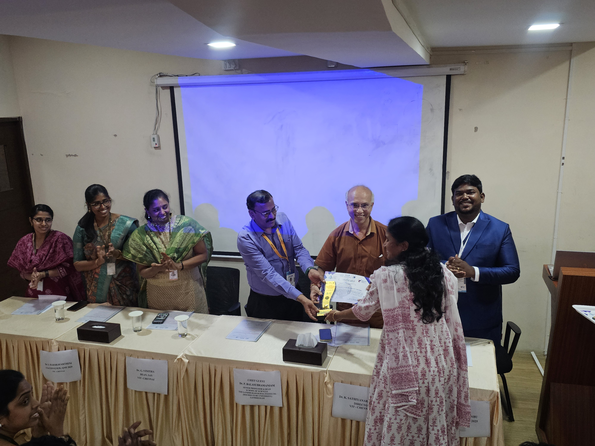
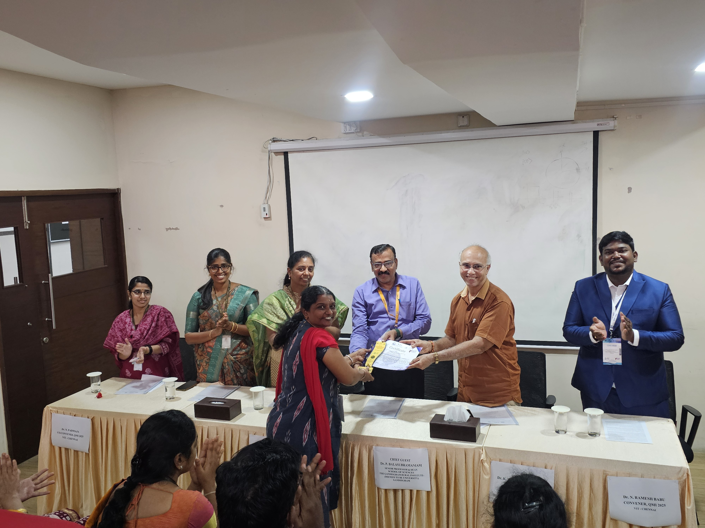
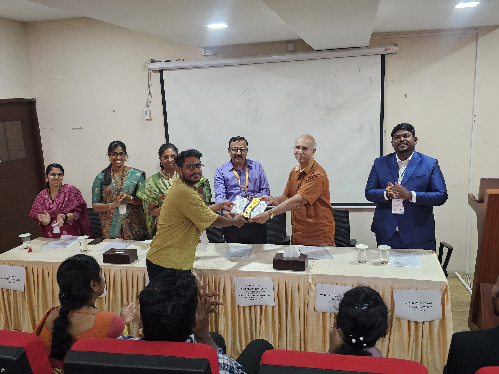

To encourage active learning, knowledge sharing, and active participation throughout the five-day workshop, various awards and recognitions were presented during the valedictory ceremony. Participants were evaluated based on quiz performance, technical discussions, interaction during sessions, and overall engagement throughout QMI 2025.

Dr. Canavoy Narahari Sujatha from Sreenidhi Institute of Science and Technology, Telangana was honoured with QMI Excellence Award (1st Place) in recognition of consistent engagement throughout the five-day QMI 2025 workshop.

Dr. Sujatha E from SRM Institute of Science and Technology, Chennai was honoured with QMI Distinction Award (2nd Place) in recognition of consistent engagement throughout the five-day QMI 2025 workshop.

Mr. Sobhin Thomas from Vellore Institute of Technology, Chennai was honoured with QMI Merit Award (3rd Place) in recognition of consistent engagement throughout the five-day QMI 2025 workshop.